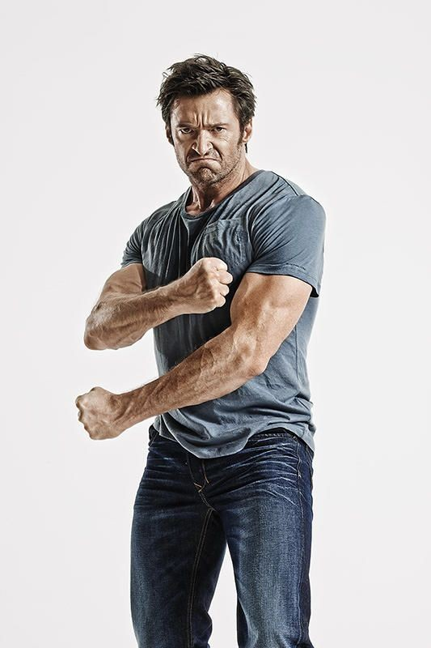
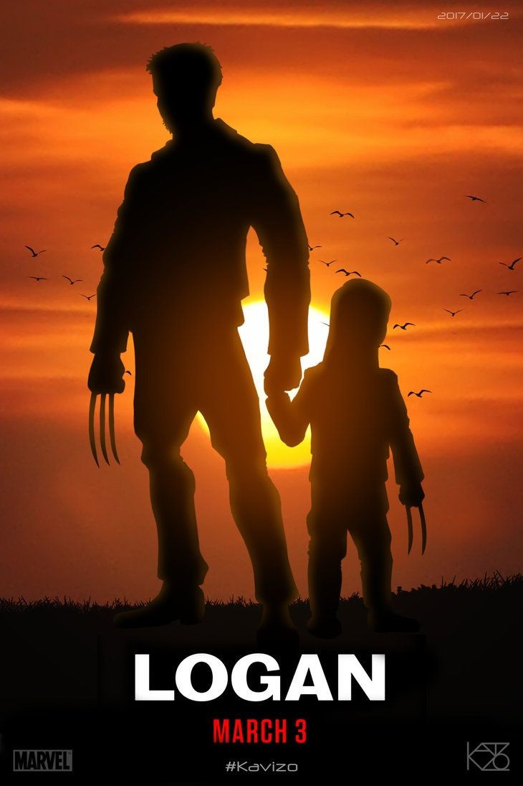
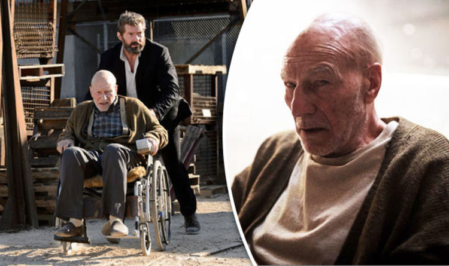
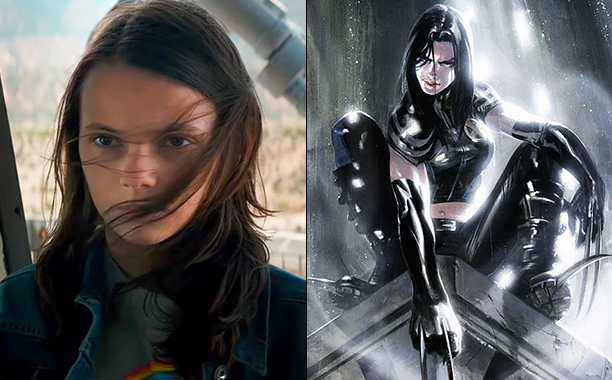

• Última vez que Hugh Jackman interpreta Wolverine, por causa da sua idade e por questões de saúde. O ator foi diagnosticado com câncer de pele, por este motivo, ele iria se aposentar do papel de Wolverine.
• O ator Hugh Jackman entrou para o livro dos recordes, com o título de ator que passou mais tempo interpretando um herói da Marvel no cinemas. O ator passou 16 anos no papel de Wolverine, iniciando em 2000 e anunciando o fim em 2016 com o filme Logan.
• O título do filme é uma referência à minissérie de quadrinhos “Velho Logan”, de Mark Millar. A escolha faz uma oposição ao título Wolverine: Imortal (2013).
• Segundo o diretor James Mangold, Logan, neste filme, apresenta-se de uma forma mais humana. Além da ajuda da computação gráfica e de algumas telas verdes, a trilha sonora foi um fator importante para alcançar este ar menos imortal. A música Hurt, por exemplo, que é tocada no trailer, foi escolhida com a intenção de ressaltar este outro lado do personagem. Ela é interpretada por Johnny Cash, que, aliás, tem um filme dirigido por James Mangold e inspirado em sua história: Johnny & June (2006).
• Sir Patrick Stewart perdeu quase 10 quilos para viver o professor Charles Xavier em sua velhice, já bem doente. Stewart afirmou que tinha um peso constante desde a adolescência e nunca tinha perdido peso deliberadamente. E durante as gravações, Hugh Jackman realmente carregou Stewart em seus braços nas cenas em que Wolverine levantou o professor Xavier.Já Boyd Holbrook ganhou quase cinco quilos para o papel de Donald Pierce.
• Hugh Jackman induziu a desidratação durante 48 horas antes de filmar cenas de Wolverine sem camisa, perdendo bastante peso no processo. Ele acrescentou que o método é perigoso e ninguém deve tentar em casa. Jackman usou essa mesma técnica cinco anos antes para criar o prisioneiro Jean Valjean em Os Miseráveis (2012).
• Na cena em que Logan está bebendo em um cemitério, em uma das lápides está escrito: Peters. É uma referência ao ator Evan Peters, que interpreta o Mercúrio.
• James Mangold revelou que Hugh Jackman teve um corte de salário para que a classificação indicativa do filme fosse restrita a adultos e maiores de 17 anos acompanhado do responsável.
• Richard E. Grant, Peter Dinklage e Sophie Turner são alguns atores de Game of Thrones(2011) que estrelaram em algum dos filmes da franquia X-Men.
• No Reino Unido, a pré-estreia do filme foi em um horário um tanto incomum. Ao invés da exibição da meia-noite habitual, o filme foi liberado as 22h23. Esta é uma referência ao filme, incluindo o personagem da X-23. X é o número romano para 10.
• Em junho de 2017, Logan tornou-se o filme de super-herói número 1 de todos os tempos, no RottenTomatoes, relegando Batman: O Cavaleiro das Trevas (2008) ao número 2. Mas o personagem Logan sorri apenas três vezes em todo o filme.
• O filme foi selecionado para participar da 67ª edição do Festival Internacional de Berlim.